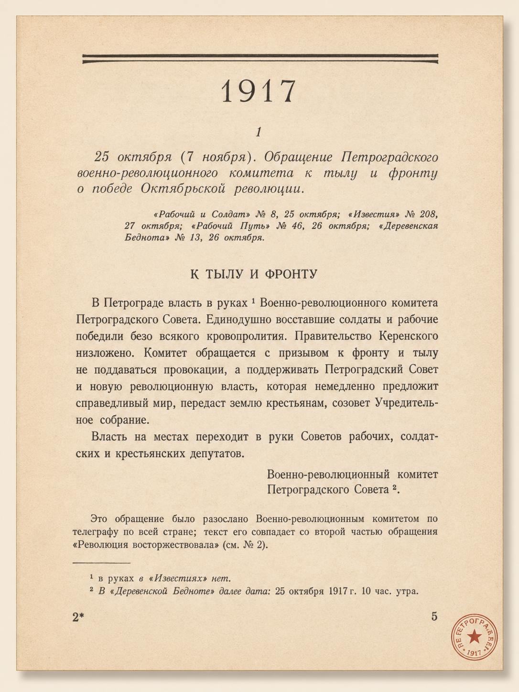
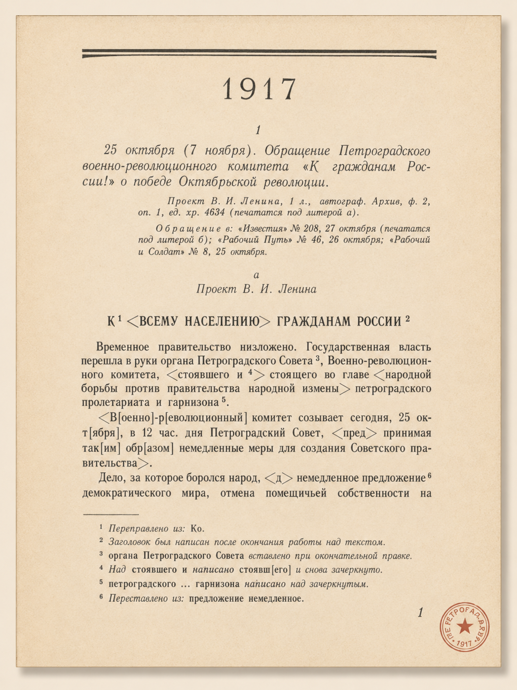
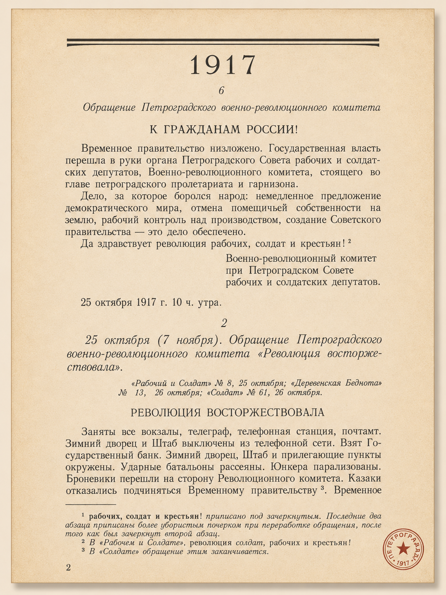
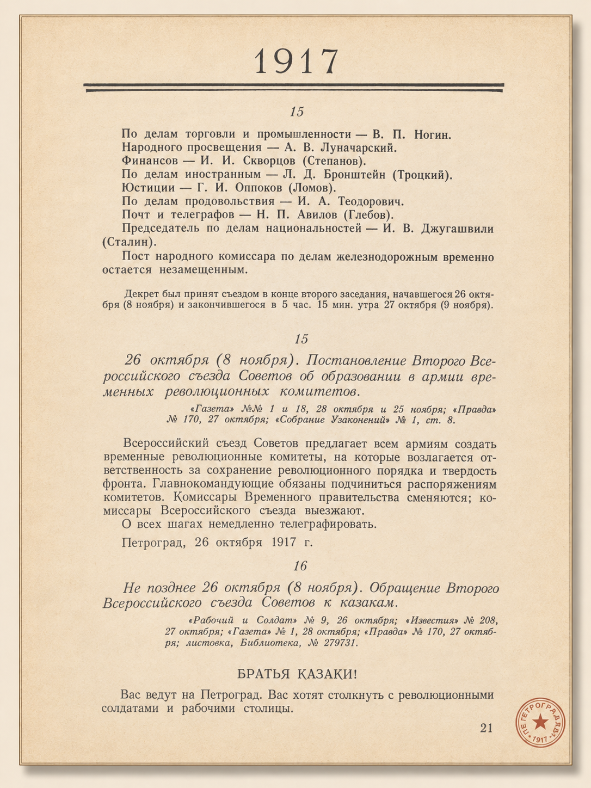
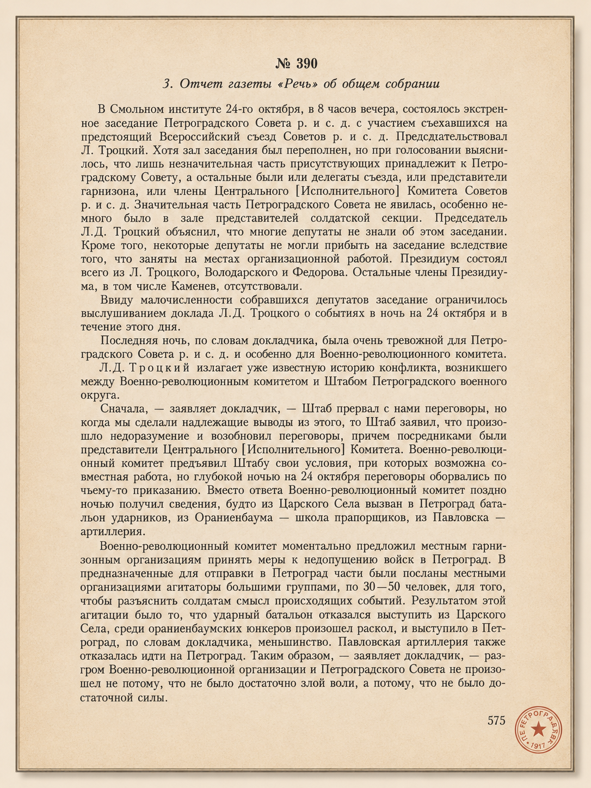
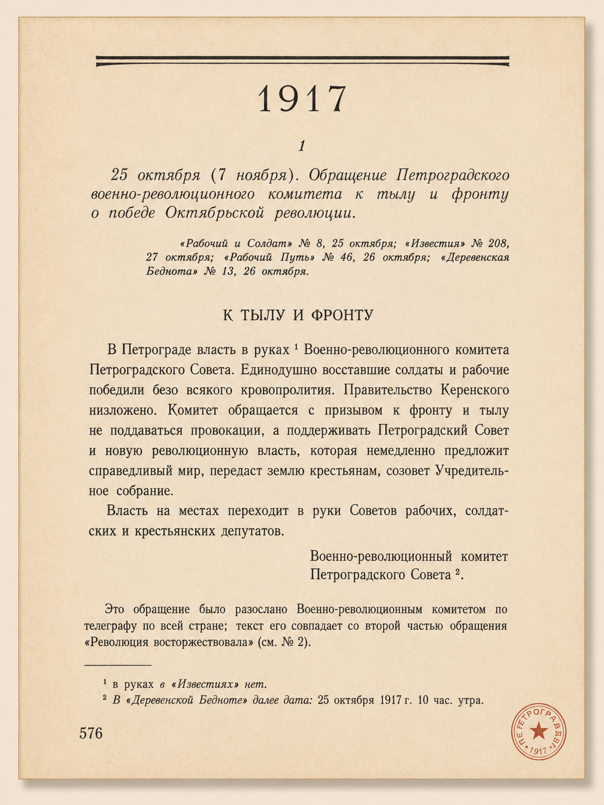
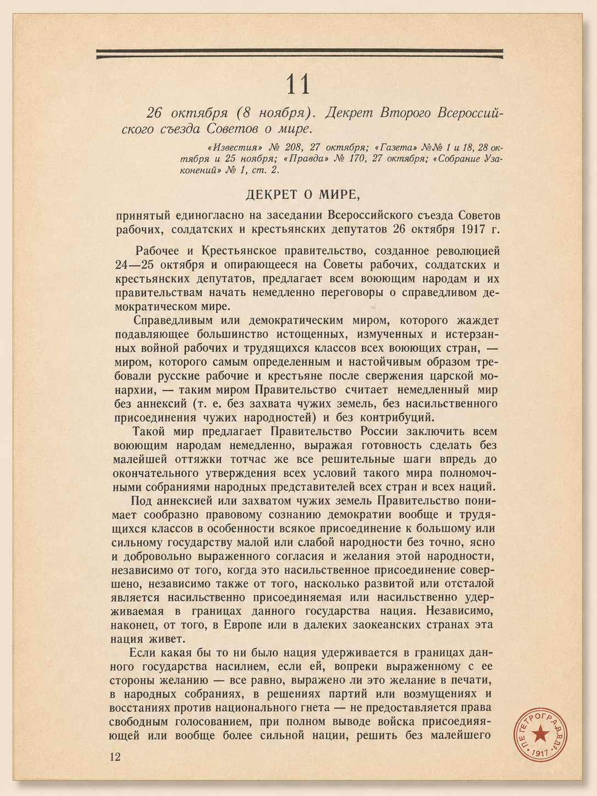
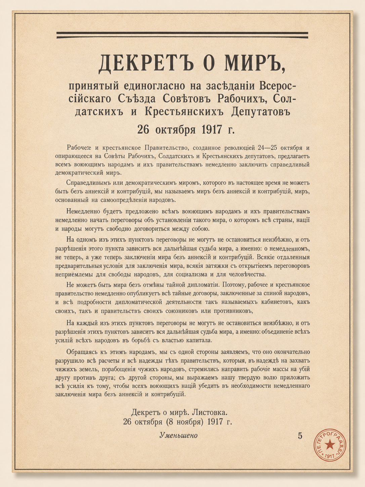
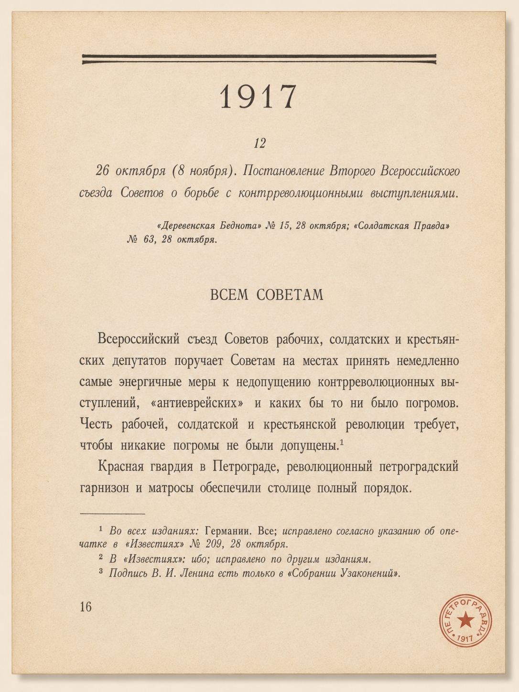

Кризис
Газета фиксирует момент, когда политический процесс ещё не получил окончательного имени.

Газета фиксирует момент, когда политический процесс ещё не получил окончательного имени.
Советская печать быстро закрепляет формулу «победа Октябрьской революции».
Газетная полоса становится местом официального оформления новой власти.
К осени 1917 года Российская республика находилась в состоянии глубокого политического и социального кризиса. После Февральской революции власть перешла к Временному правительству, однако оно не смогло решить ключевые вопросы: о мире, земле и экономической стабилизации.
Продолжение участия России в Первой мировой войне усиливало недовольство населения. В стране росли инфляция, дефицит продовольствия, падала дисциплина в армии. На этом фоне усиливались радикальные партии, прежде всего большевики.
В столице важнейшим центром власти стал Петроградский Совет рабочих и солдатских депутатов, конкурировавший с Временным правительством. Осенью 1917 года при нём был создан Военно-революционный комитет, фактически ставший центром подготовки вооружённого восстания.
В этих условиях пресса перестала быть просто источником новостей. Газеты стали инструментом политической борьбы: они сообщали о событиях и задавали читателю способ их понимания.
«Правда» была центральным органом большевиков. Газета выражала позицию РСДРП(б) и поддерживала переход власти к Советам. После Февраля 1917 года «Правда» стала главным рупором курса на социалистическую революцию.
агитационный / мобилизационный стиль«Известия» были официальным органом Советов. После прихода большевиков к власти они стали государственным изданием, публиковавшим декреты и распоряжения новой власти.
официальный / документальный стиль«Речь» была центральным органом Конституционно-демократической партии. В октябре 1917 года газета занимала антибольшевистскую позицию, критиковала радикалов и защищала Временное правительство.
язык процедуры и отчёта«Русские ведомости» была газетой, тесно связанной с московской профессурой и земскими либеральными кругами. К 1917 году издание сблизилось с кадетами.
либеральная интеллигентская рамка«Биржевые ведомости» были крупной информационно-коммерческой газетой массового типа. В дни кризиса 1917 года её тональность была тревожной и антибольшевистской.
оперативная хроника / тревога«Правда» была главным печатным органом большевиков. Первый номер газеты вышел в Петербурге 22 апреля / 5 мая 1912 года.
Издание было создано по инициативе Владимира Ильича Ленина как массовая ежедневная рабочая газета. После Февральской революции «Правда» снова стала выходить в Петрограде: с 5/18 марта 1917 года — как орган ЦК и Петроградского комитета РСДРП(б), позднее — как орган ЦК РСДРП(б).
Её основной аудиторией были рабочие, солдаты, сторонники большевиков и читатели, для которых лозунг власти Советов постепенно становился политической программой. Газета не ограничивалась сообщением новостей: она объясняла события через позицию партии. В этой логике Временное правительство не могло решить главные вопросы революции, а власть должна была перейти к Советам.
К лету 1917 года тираж «Правды» достигал примерно 85–90 тысяч экземпляров. Для большевиков это был заметный агитационный ресурс. Через газету партия ежедневно обращалась к массовой аудитории, объясняла свои лозунги, критиковала политических противников и добивалась поддержки в рабочей и солдатской среде.
После возвращения Ленина в Россию в апреле 1917 года политическая линия «Правды» изменилась. До его приезда важную роль в редакции играли Лев Каменев и Иосиф Сталин; их позиция была осторожнее и допускала более мягкое отношение к Временному правительству. Ленин, напротив, настаивал на разрыве с этой линией. Через «Правду» он продвигал идеи, которые вошли в историю как «Апрельские тезисы»: отказ от поддержки Временного правительства, переход всей власти к Советам, подготовка нового этапа революции.
В редакционной работе 1917 года участвовал Григорий Яковлевич Сокольников. Его не стоит называть единоличным главным редактором или издателем: в этот период «Правда» была связана с работой редколлегии, в которую входили разные большевистские деятели.
Поэтому точнее говорить, что Сокольников входил в редакционное руководство большевистской печати 1917 года.
После июльских событий 1917 года «Правда» была закрыта. До Октября большевистская печать выходила под другими названиями: «Листок “Правды”», «Рабочий и солдат», «Пролетарий», «Рабочий», «Рабочий путь». После октябрьских событий название «Правда» было восстановлено: 27 октября / 9 ноября 1917 года газета снова вышла под прежним названием как орган ЦК РСДРП(б).
В этот момент «Правда» возвращалась уже как газета победившей политической силы. Её язык стал более властным и программным: лозунги, обращения, поддержка декретов, объяснение решений большевиков. После революции «Правда» закрепилась как центральный партийный орган большевиков, а с 1918 года — как орган РКП(б). В дальнейшем редакцию возглавил Николай Бухарин.
«Известия» начали выходить в феврале/марте 1917 года как газета Петроградского Совета рабочих и солдатских депутатов.
С 1/14 августа 1917 года издание стало органом ВЦИК, то есть получило общероссийский официальный статус ещё до Октябрьской революции. После Октября значение газеты изменилось не формально, а политически: теперь через неё новая власть публиковала свои решения, декреты и обращения.
Если «Правда» была партийной газетой большевиков, то «Известия» занимали другое место в системе печати. Они были связаны с советскими органами власти и воспринимались как источник официальной информации. После Октябрьской революции газета публиковала законодательные акты новой власти и освещала установление советской власти на местах.
Тираж «Известий» в 1917 году составлял десятки тысяч экземпляров. До Октября газета не имела единой большевистской линии: она была пространством борьбы между большевиками и меньшевиками, а её редакционная позиция зависела от расстановки сил внутри советских органов.
В 1917 году среди редакторов «Известий» были Юрий Михайлович Стеклов и Фёдор Ильич Дан. Стеклов редактировал газету в феврале/марте — мае 1917 года, затем после Октября вернулся к руководству редакцией и оставался редактором до 1925 года. Дан редактировал «Известия» с мая по октябрь/ноябрь 1917 года.
Фёдор Дан был одним из заметных меньшевистских деятелей. Его присутствие в редакции показывает, что до Октября «Известия» отражали не только большевистскую, но и меньшевистско-эсеровскую линию советского движения. Поэтому смена редакционного руководства после Октября означала не просто замену одних журналистов другими, а переход газеты под контроль победившей политической силы.
Юрий Стеклов был социал-демократом, связанным с большевистской печатью. После Октября Стеклов стал одним из главных редакторов официальной советской печати, а «Известия ВЦИК» — важным каналом публикации решений новой власти.
«Речь» была одной из главных либеральных газет начала XX века. Она выходила с 1906 года и была связана с Конституционно-демократической партией — кадетами.
Формально издание могло выступать как широкая общественно-политическая газета, но фактически оно выражало позицию кадетской среды.
Её читали либеральная интеллигенция, образованная городская публика, сторонники парламентского развития, часть политически активных офицеров и чиновников. В 1917 году «Речь» выступала против большевиков и защищала идеи правового порядка, парламентаризма и преемственности государственной власти.
С редакцией «Речи» были связаны Иосиф Владимирович Гессен и Павел Николаевич Милюков. Гессен с 1906 года был членом ЦК кадетской партии и соредактором «Речи» вместе с Милюковым. Милюков, лидер кадетов и министр иностранных дел Временного правительства весной 1917 года, также редактировал эту газету.
Для Гессена «Речь» была не только газетой, но и способом политического участия. Через неё кадеты формулировали позицию по вопросам власти, войны, реформ и будущего государственного устройства России. Газета говорила с читателем языком либеральной политики: через право, парламент, ответственность правительства и неприятие революционного насилия.
Милюков был историком, публицистом и одним из наиболее влиятельных деятелей кадетской партии. В 1917 году его политическая роль стала особенно заметной: после Февральской революции он вошёл во Временное правительство и занял пост министра иностранных дел.
Октябрьский переворот «Речь» не могла воспринимать как победу революции в большевистском смысле. Для неё это был разрыв с парламентской и правовой линией, которую защищали кадеты. Уже 26 октября / 8 ноября 1917 года газета была закрыта Петроградским ВРК. Позднее она ещё пыталась выходить под другими названиями — «Наша речь», «Свободная речь», «Век», «Новая речь», «Наш век», — но прежнее положение вернуть не смогла.
После революции Гессен и Милюков продолжили антибольшевистскую деятельность в эмиграции. Гессен работал в берлинской газете «Руль», а Милюков с 1920 года жил во Франции и редактировал парижские «Последние новости».
«Русские ведомости» были московской общественно-политической газетой. Издание выходило с 1863 года и к 1917 году имело долгую историю.
В отличие от более партийной «Речи», эта газета воспринималась как издание старой либеральной интеллигенции, университетской профессуры, земских кругов и образованного московского читателя.
К началу XX века «Русские ведомости» занимали либерально-демократическую позицию и были близки к правому крылу кадетов. В 1917 году газета выступала против большевиков и видела в усилении радикальных сил угрозу правовому порядку и устойчивости государства.
Последним редактором газеты был Пётр Валентинович Егоров. Его работа пришлась на период, когда старая либеральная пресса быстро теряла возможность действовать в прежних условиях: война, Февральская революция, кризис Временного правительства и приход большевиков к власти резко изменили положение редакций.
После Октября «Русские ведомости» оказались среди изданий, которые новая власть воспринимала как политически враждебные. Газета была закрыта после публикации статьи Бориса Савинкова «С дороги», а Пётр Егоров был приговорён к трём месяцам заключения.
История «Русских ведомостей» показывает, как после Октября менялись границы публичной политики. Газеты, которые раньше участвовали в дискуссии как самостоятельные либеральные издания, постепенно вытеснялись из печатного пространства.
«Биржевые ведомости» были петербургской ежедневной политико-экономической газетой. Издание выходило с 1880 года, а с 1885 года стало ежедневным.
Газета была рассчитана на широкую городскую аудиторию: деловые круги, служащих, либерально настроенных читателей и тех, кто следил за политикой, экономикой и городской хроникой.
Ключевой фигурой в истории газеты был издатель Станислав Максимилианович Проппер. Именно при нём «Биржевые ведомости» превратились в одно из заметных коммерческих изданий Российской империи.
В 1893 году появилось второе, более дешёвое издание газеты, рассчитанное на массового читателя. Благодаря этому газета стала доступнее, а её тираж заметно вырос: если в середине 1880-х годов он составлял лишь несколько тысяч экземпляров, то к концу 1890-х достигал уже десятков тысяч.
Политически «Биржевые ведомости» занимали умеренно-либеральную позицию. В годы первой русской революции газета была близка к кадетской среде. Некоторое время она выходила под названиями «Свободный народ» и «Народная свобода» при участии Павла Милюкова и Иосифа Гессена. После закрытия этих изданий Проппер восстановил выпуск «Биржевых ведомостей».
В отличие от «Правды» или «Речи», «Биржевые ведомости» не были жёстко партийным органом. Их роль была другой: быстро реагировать на события, соединять новости, экономическую информацию, политическую публицистику и городскую хронику. В дни революционного кризиса 1917 года тональность газеты стала тревожной и антибольшевистской.
С «Биржевыми ведомостями» были связаны многие журналисты, публицисты и писатели, среди них Иероним Ясинский, Дмитрий Линев, Александр Куприн и другие авторы массовой городской прессы. Особенно заметную роль Ясинский играл во втором издании газеты, где занимался редакционной и публицистической работой.
В 1917 году «Биржевые ведомости» сохраняли антибольшевистскую направленность и критически относились к радикализации революции. После Октябрьской революции газета была закрыта большевистскими властями как оппозиционное издание. Сам Станислав Проппер вскоре эмигрировал из России.
История «Биржевых ведомостей» показывает ещё один тип прессы начала XX века. Это была не партийная газета и не узко интеллектуальное издание, а массовая коммерческая пресса, которая соединяла политику, экономику, публицистику и повседневную жизнь большого города.
24 октября фиксируется как день нарастающего кризиса и начала вооружённых действий. В газетной номенклатуре ещё нет ни обращений о победе, ни декретов.
Советская печать фиксирует происходящее как уже состоявшуюся победу и переход власти. Формула «о победе Октябрьской революции» задаёт интерпретацию события.
На первый план выходят декреты, постановления и документы управления. Газета становится пространством, где новая власть предъявляет себя как государство.
Слово тоже оружие
Газетный заголовок становится не только сообщением, но и актом политического утверждения.24 октября 1917 года в газетном корпусе фиксируется как день нарастающего кризиса и начала вооружённых действий. Это ещё не день оформленного политического результата.
В отличие от 25 октября, когда советская печать уже начнёт говорить о «победе Октябрьской революции», 24 октября в газетной номенклатуре ещё нет ни обращений о победе, ни декретов.
В советской части корпуса этот день представлен не через отдельные программные публикации, а ретроспективно, через документы, напечатанные позднее. Прежде всего через «Известия» № 208 от 27 октября, где события 24 октября включаются в общий нарратив перехода власти к Советам.
Либеральная пресса, напротив, фиксирует 24 октября как текущий политический процесс, ещё не получивший завершённой интерпретации. Наиболее точно атрибутированный материал здесь принадлежит газете «Речь»: «24 октября. I. Общее собрание. 3. Отчёт газеты “Речь” об общем собрании», опубликованный в № 251 от 25 октября.
В публикации события ещё не представлены как завершённая революция; они описываются через язык заседаний, обсуждений и политических процедур.
По другим либеральным изданиям картина менее подробная. Для «Русских ведомостей» подтверждена подшивка за 1917 год в ГПИБ, но точный заголовок и номер публикации за 24 октября в доступном массиве не указаны. Для «Биржевых ведомостей» последним точно атрибутированным номером дореволюционного периода значится № 16510 от 24 октября, но без расшифровки конкретных заголовков внутри номера.
Так возникает важная асимметрия источников. Советская перспектива включает 24 октября в цепь событий, ведущих к победе революции. Либеральная пресса описывает происходящее как текущий политический кризис, выраженный через заседания, обсуждения и нестабильность власти.
25 октября 1917 года советская печать фиксирует происходящее как уже состоявшуюся победу и переход власти.
Важно учитывать источниковедческую поправку: ключевые тексты о событиях 25–26 октября по старому стилю часто видны не в номерах того же дня, а в ближайших выпусках 27–28 октября. Именно тогда в печать пошли обращения и решения II Всероссийского съезда Советов и Петроградского военно-революционного комитета.
Главным газетным узлом здесь становятся «Известия» № 208 от 27 октября. В этом выпуске зафиксированы обращения Второго Всероссийского съезда Советов к рабочим, солдатам и крестьянам, а также обращение Петроградского военно-революционного комитета «К гражданам России».
«О победе Октябрьской революции»
Оба названия уже не описывают неопределённый кризис в Петрограде. Они объявляют политический результат как свершившийся факт. Ключевая формула не просто сообщает о событии, а задаёт его интерпретацию.
Для «Правды» этот же блок источников осложнён расхождением: в карточке обращения съезда публикация отнесена к «Правде» № 70 от 27 октября, тогда как другие документы, относящиеся к 26 октября, идут по № 170 от 27 октября. Разрешать это противоречие без дополнительной проверки по сканам нельзя, поэтому его нужно оставить как зафиксированное архивной системой расхождение.
Либеральная пресса 25 октября выглядит иначе. У «Речи» точно установлен не манифест и не декларация, а материал «24 октября. I. Общее собрание. 3. Отчет газеты “Речь” об общем собрании», опубликованный в № 251 от 25 октября на с. 3.
Эта формула показывает другую редакционную оптику. Вместо языка победы используется язык отчёта, заседания и политической процедуры. «Речь» не принимает большевистский словарь и не закрепляет происходящее как победу революции.
Так различие между советской и либеральной прессой 25 октября проявляется не только в оценке, но и в самом типе текста. Советская пресса говорит через обращения «о победе Октябрьской революции», а либеральная, насколько она документирована в этом корпусе, отвечает отчётом о собрании либо не даёт точно атрибутированного текста за этот день.
Если 25 октября в советской прессе представлен как момент победы, то 26 октября оформляется как день институционализации новой власти.
На первый план выходят уже не только обращения, но и декреты, постановления, документы управления.
В «Известиях» № 208 от 27 октября прямо атрибутированы «Декрет Второго Всероссийского съезда Советов о мире» и «Постановление Второго Всероссийского съезда Советов о немедленном аресте Керенского».
В «Правде» № 170 от 27 октября точно названы обращение «Ко всем железнодорожникам» и постановление о немедленном аресте Керенского. В «Правде» № 171 от 28 октября зафиксированы декреты о земле и об образовании Рабочего и Крестьянского правительства.
Из этой связки видно, как меняется характер публикации. 25 октября советская печать говорит языком воззвания и объявления победы. 26 октября она переходит к языку декрета, постановления и организационного оформления власти.
Темы мира, земли, нового правительства и ареста Керенского показывают, что газета уже не просто фиксирует революционную хронику. Она становится пространством, где новая власть предъявляет себя как действующее государство.
Либеральная пресса на 26 октября выглядит значительно слабее и фрагментарнее. У «Речи» ещё есть точно зафиксированный номер 252 от 26 октября, где опубликован материал «25 октября. II. Общее собрание. 3. Отчет газеты “Речь” об общем собрании» на с. 2. Но это по-прежнему отчёт, а не декларация новой власти и не альтернативная программа действий.
Именно 26 октября граница между двумя прессовыми мирами становится особенно заметной. Советская печать насыщается декретами, а либеральная либо удерживает форму отчёта, либо уходит в архивную неопределённость последних выпусков.
Советская пресса, прежде всего «Правда» и «Известия», описывает события как свершившийся и легитимный переход власти к Советам.
В её языке доминируют слова «победа», «обращение», «декрет», «постановление». Эти публикации представляют переход власти как свершившийся факт: событие сразу получает статус исторического результата.
«Известия» выступают главным каналом официального оформления новой власти. В № 208 от 27 октября соединяются тексты о победе революции и первые документы новой власти. Поэтому газета становится не просто хроникёром, а площадкой институциональной коммуникации.
«Правда» действует как партийный и мобилизационный орган. В её публикациях особенно заметна связь между революционным событием и политическим оправданием новой власти. Через публикацию декретов и постановлений она закрепляет большевистскую интерпретацию Октября.
Либеральная пресса выглядит иначе. «Речь» не использует язык победы. Её точно зафиксированные публикации оформлены как отчёты об общем собрании. Это язык процедуры, обсуждения и политической хроники. Он показывает, что редакция не принимает большевистскую рамку и не признаёт происходящее как завершённую революционную победу.
«Русские ведомости» и «Биржевые ведомости» в данном корпусе представлены менее полно. Их политический профиль позволяет отнести их к либеральному и антибольшевистскому полю, но точные заголовки за 25–26 октября не установлены. Поэтому подробно анализировать их лексику за эти дни нельзя без реконструкции.
Главное различие между советскими и либеральными изданиями состоит в том, что советская пресса быстро создаёт завершённый язык события. Для неё Октябрь уже является победой, а новая власть уже действует. Либеральная пресса продолжает описывать события как разворачивающийся политический кризис и последовательность заседаний и обсуждений, не предлагая единой интерпретации происходящего.
В революционной ситуации журналисты и редакции оказались вовлечены в политическую трансформацию. Их роль вышла за рамки обычного информирования.
В советской прессе журналистика стала частью политического механизма новой власти. «Правда» и «Известия» публиковали официальные обращения, декреты и постановления II Всероссийского съезда Советов и Военно-революционного комитета. Газета превращалась в канал, через который власть заявляла о себе, оформляла решения и распространяла их среди населения.
В «Известиях» № 208 от 27 октября сосредоточены ключевые документы: от обращения о победе революции до декретов и постановлений. Это делает газету узлом институциональной коммуникации.
В либеральной прессе роль журналиста остаётся более традиционной. «Речь» фиксирует заседания, обсуждения и политические процедуры. Это соответствует либеральной модели политической журналистики начала XX века, ориентированной на анализ и информирование образованной аудитории.
Но в условиях революции такая модель оказывается менее влиятельной. Советская пресса предлагает читателю ясную и завершённую картину: власть перешла к Советам, революция победила, новая власть издаёт декреты. Либеральная пресса сохраняет язык процедуры и тем самым проигрывает в скорости и силе интерпретации.
Газетный корпус показывает, что пресса в октябре 1917 года не просто отражала политические изменения. Она участвовала в их оформлении. Советская пресса выполняла функцию институционализации новой власти: через обращения и декреты она формировала представление о том, что власть уже перешла к Советам и действует как легитимный государственный центр.
Либеральная пресса, напротив, фиксировала события как кризисный и незавершённый процесс. Отсутствие языка «победы» и преобладание отчётных форм показывают, что для неё происходящее оставалось открытым и неопределённым.
Это различие отражает перераспределение контроля над информационным пространством. Уже в момент событий видно, что советская пресса становится доминирующей, а либеральная постепенно вытесняется и теряет возможность влиять на массовое сознание.

Обращение Петроградского ВРК

Публикация о победе Октябрьской революции

Хроника первых сообщений

Постановление съезда Советов

Либеральная оптика событий

Вариант газетной публикации

Документальное оформление власти

Листовка 26 октября

Борьба с контрреволюционными выступлениями
Обращение Петроградского ВРК
Публикация о победе Октябрьской революции
Хроника первых сообщений
Постановление съезда Советов
Либеральная оптика событий
Вариант газетной публикации
Документальное оформление власти
Листовка 26 октября
Борьба с контрреволюционными выступлениями
Октябрьская революция проявилась в газетах не только как политическое событие, но и как медийный перелом.
Советская печать быстрее всех дала происходящему чёткое название: «победа Октябрьской революции». Затем она почти сразу перешла к языку декретов и постановлений, то есть к оформлению новой власти.
Либеральная пресса не приняла этот язык. «Речь» продолжала говорить через отчёты и политические процедуры. «Русские ведомости» и «Биржевые ведомости» в доступном корпусе представлены фрагментарно, что не позволяет приписывать им точные формулировки за 25–26 октября.
Главное различие между изданиями заключалось не только в политической оценке, но и в самом способе описания событий. Советская пресса говорила языком результата и власти. Либеральная пресса сохраняла язык процесса и кризиса. Именно поэтому победа большевиков была не только военной и политической, но и языковой: они быстрее других закрепили в публичной коммуникации собственное описание и интерпретацию событий.